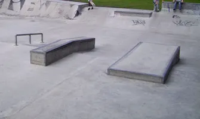

Skateboarding
Getting started on your car-free journey
-
Get the necessary equipment
Crazy Monkey
Crazy Monkey provides premium outdoor fun products such as BMX, Scooters, Rolly Toys, and Go-Karts. They have a large collection of high-quality accessories such as Ramps, Wheels, Frames, Skateboard parts with many more choices.
Click here to go to the Crazy Money's website -
Learn to skate
Go Skate
You can learn skateboarding completetely in 2 weeks! This class has been tested on over 2,500 skaters over the past two years. They have taken the exact techniques from several Ireland’s pro skaters on what works best in their training and put it ALL in this one course.
Click here to go to the Go Skate's website -
Find a Skatepark
Mardyke Walk Skatepark
You can practice skating down the Mardyke walk and even stop in and practice your skills in the skatepark. The skatepark has ramps and railings where you can level up your skills. You might also meet some likeminded individuals on their skateboards or BMXs.
Click here to go to the Pure Cork article on Cork's Skatepark